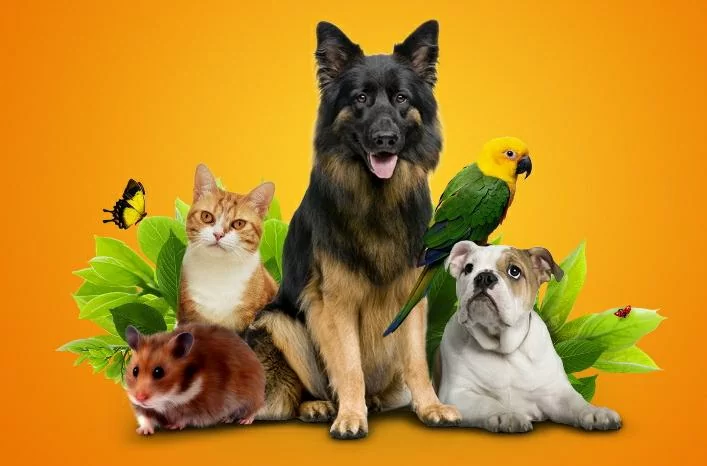
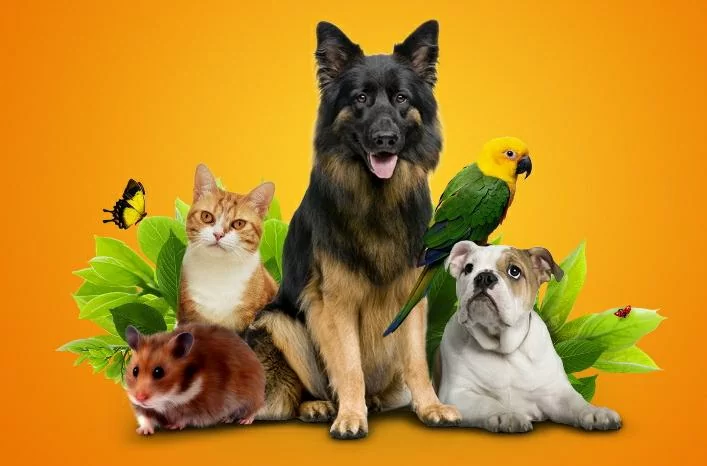
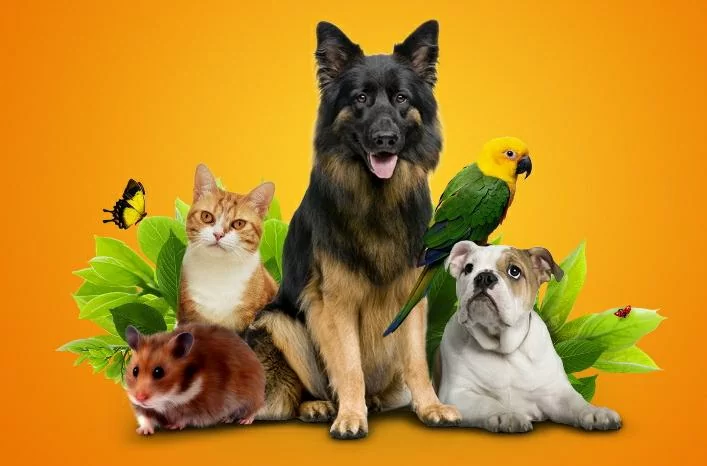
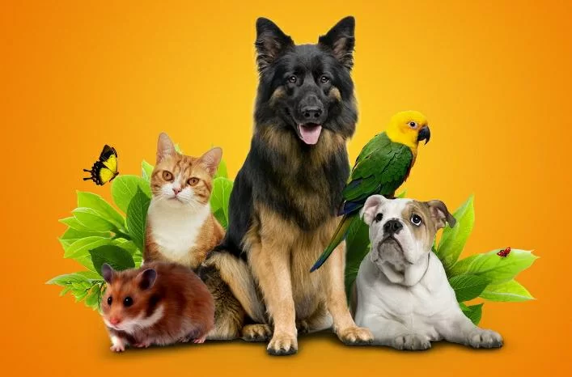
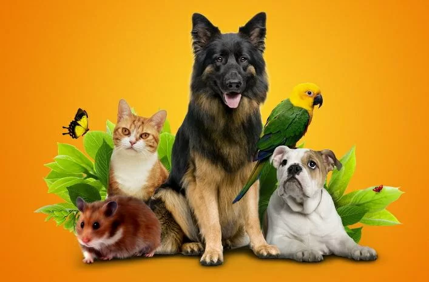
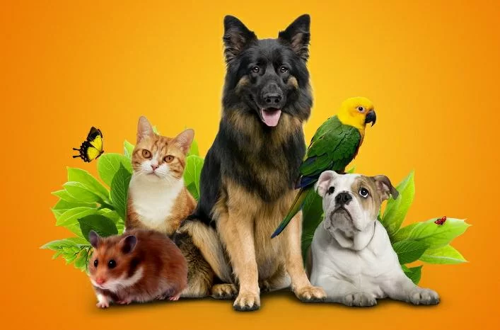

Добро пожаловать! Сеть зоомагазинов «Природа» представляет полный спектр зоотоваров. В наших зоомагазинах «Природа» большой выбор кормов ведущих производителей: Hill`s (Хилл`с), Royal Canin (Роял Канин), Eukanuba (Эукануба), Iams (Иамс), Про План (ProPlan), Бош (Bosch), Happy Dog (Хеппи Дог), Хэппи Кэт (Happy Cat), Whiskas (Вискас), Kitekat (КитеКэт), Pedigree (Педигри), Chappi (Чаппи), Diamond (Даймонд), Нутра Голд (Nutra Gold), а также многих других кормов от эконом- до суперпремиум класса, в том числе лечебных и диетических. Также в наших зоомагазинах «Природа» Вы найдете большой выбор других зоотоваров: пищевые добавки, ветеринарные препараты, предметы ухода за животными. У нас можно приобрести различные лакомства и специализированные корма и подкормки. Любой зоомагазин «Природа» представляет покупателям богатый выбор зоотоваров и кормов для птиц, грызунов, черепах и рыб. В каждом зоомагазине «Природа» продаются не только корма, но и аксессуары: клетки, миски, переноски, игрушки, когтеточки, одежда для животных, поводки, ошейники, домики, наполнители для туалетов, тримминги, щетки, когтерезы, пуходерки, лотки, лежаки, спреи, шампуни, дезодоранты, лосьоны, кремы, бальзамы, пудры, увлажнители и многое-многое другое. Любой зоомагазин представляет хороший набор качественных и современных средств по уходу за вашими питомцами. Зоомагазин «Природа» и его продавцы покажут, как ухаживать за глазами и ушами животных, чистить зубы, стричь когти. Специалисты зоомагазина «Природа» объяснят, как следить за шерстью Вашего питомца. Зоомагазин «Природа» продает только качественные товары для животных: косметику и грумерские принадлежности. В зоомагазинах «Природа» Вы можете приобрести не только корма, но и различную литературу о животных. В зоомагазинах «Природа» Вы можете сделать заказ на любые зоотовары без предоплаты На крупные покупки кормов и зоотоваров зоомагазин «Природа» предоставляет скидки. Приходите в наш зоомагазин, и ваш питомец скажет вам спасибо!